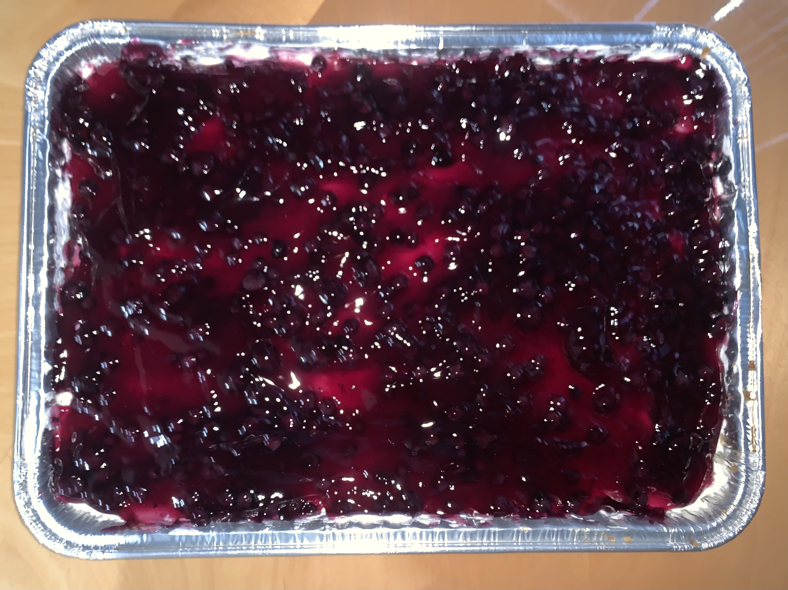
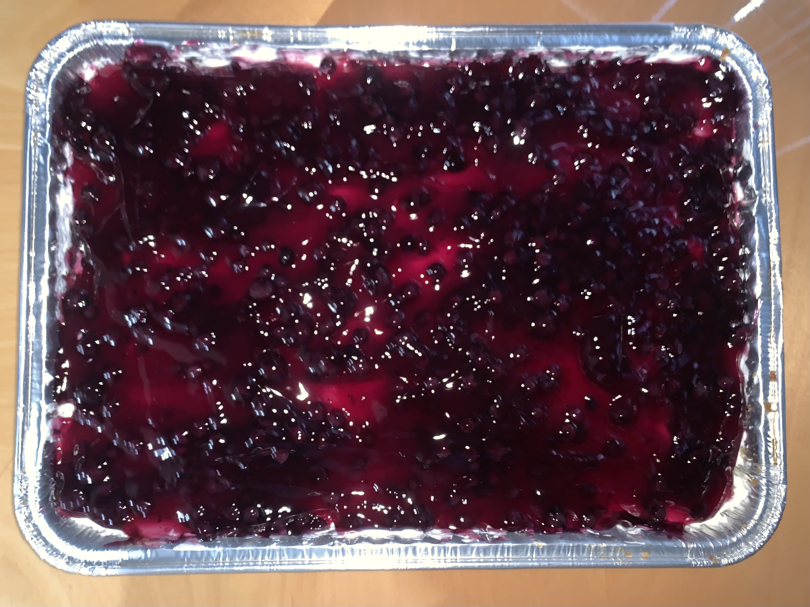
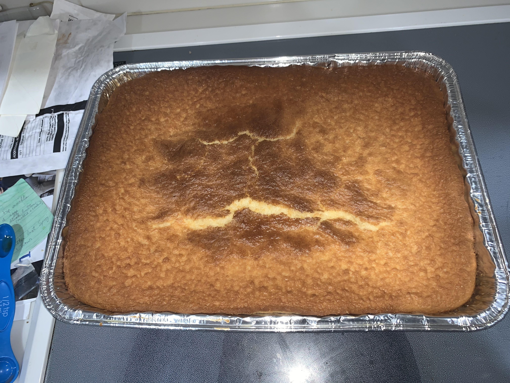
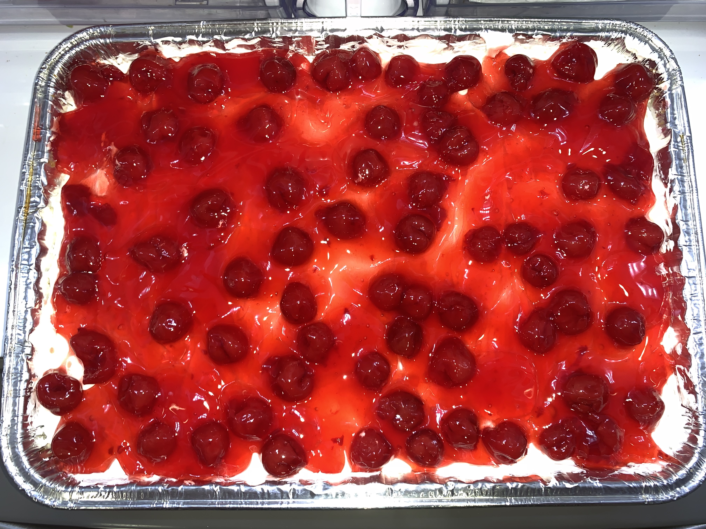
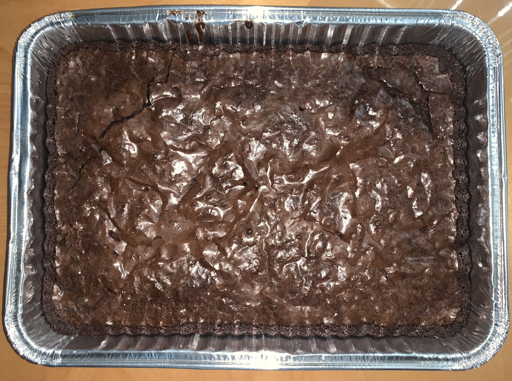
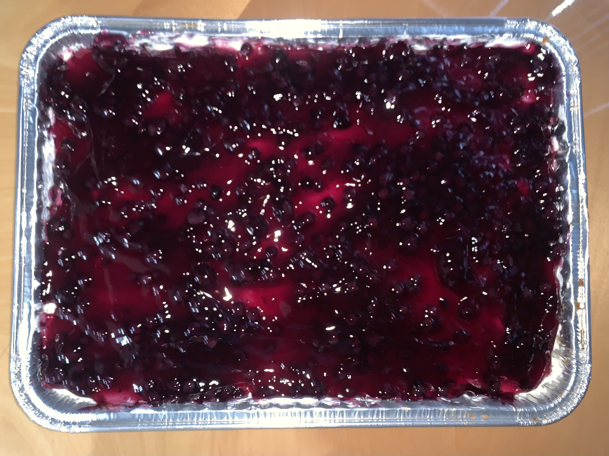
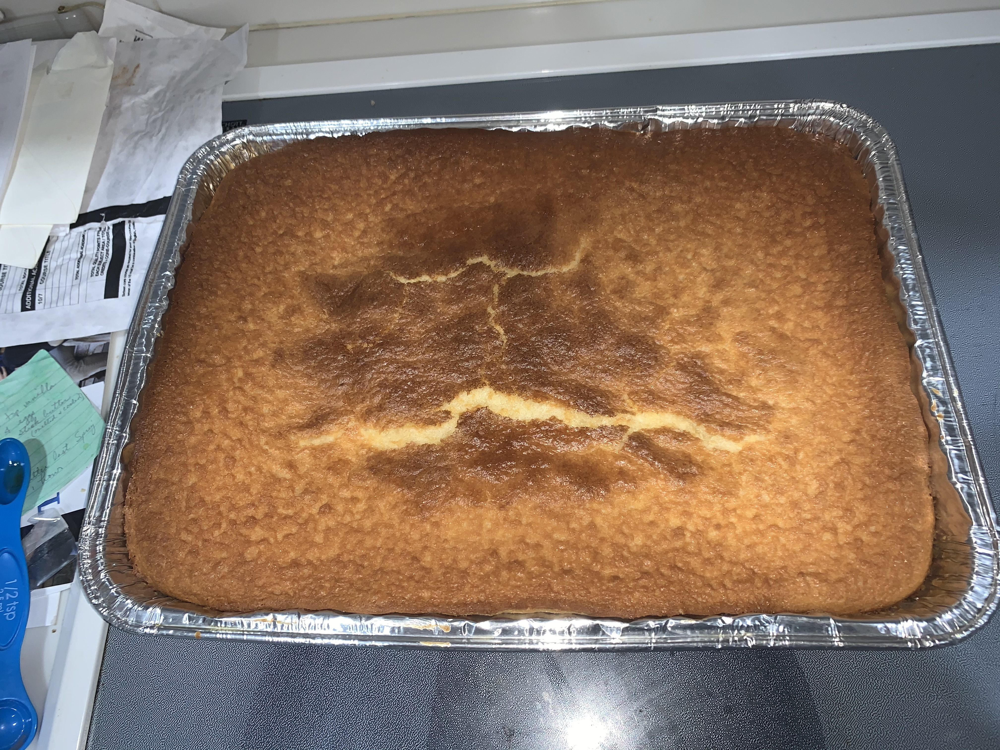
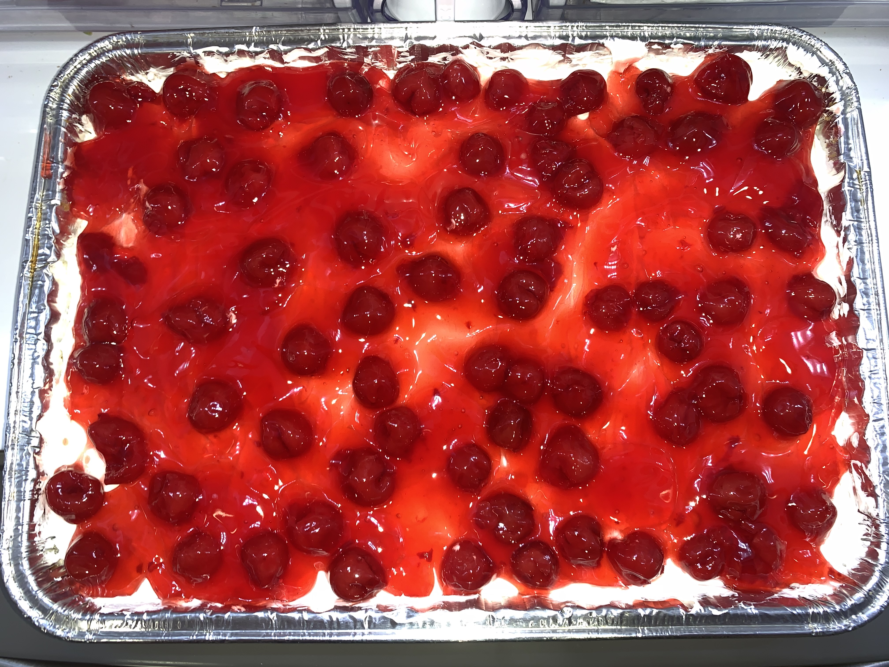
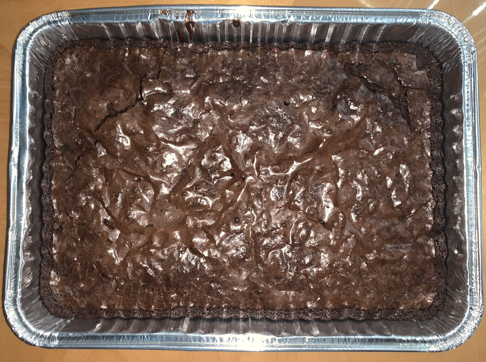

Maiah Motta
My name is Maiah Motta and I am 18 years old. I currently college at the University of California, Riverside and am a Pre-Business major. I also play on their Division 1 softball team.
I chose to be a pre-business major so that I can gain education in working in a professional business environment. I am learning toward being a Business Management major as I believe I am a leader and would do well in a management position at any job.
I do not have any formal work experience as I have been too busy for one in the past with trying to balance school, softball, and a social life. With that being said, I am an entrepreneur. I started my own small business. I bake desserts and sell them to my friends and friends of my friends. In doing this I gained experience with networking myself and my menu. I did this by spreading the word through family members, posting on social media, and passing out flyers to my neighbors. I sell my baked goods and use the money I earn to purchase the ingredients for future orders. The rest of the money that I earn is put into my savings for my future. While I enjoy baking and created this business because I love it, it is hard work. I have spent hours in the kitchen preparing ingredients, creating desserts, packaging the desserts, and then delivering them. In being an entrepreneur I have gained experience being in charge, working hard, communicating and networking with others, and more.
I have gained other important skills from being a softball player. I have played ball since I was four years old and have been on many teams, played with many teammates, and played for many coaches. This taught me how to adapt well to my surroundings, collaborate well with others, and be able to learn to work for different types of leaders that is like a boss in the work place. I know that these skills will serve me well when I do get a professional job as they are skills important in any environment. I have also learned many life lessons while playing softball which contributes to the morals and beliefs that I have today. These include values that surround a family-based environment, choosing kindness, taking care of my responsibilities, being honest and truthful even when it is a difficult situation, and more. These are all things that I believe would also help me in the workplace.
While I do not have any formal work experience, I am a dedicated, hard-working person who will always strive to be the best that I can be. I thrive in competitive settings, but am also able to collaborate well with others. I am a natural-born leader and am a great candidate for a leadership position. With that being said, I am willing to start at a lower position and gain more experience so that I can grow at the company and work towards earning a higher position. I am the right person for this job and I hope to hear from you soon.
Experience
Volunteer Work with ALEA Bridge Foundation
• Sorting clothes and donated items
• Playing softball for the Easton Preps Organization
• Creating and working for my own small business
Creating and working for my own small business
• Made baked goods for customers
• Working on my own time with my own schedule
• Balanced working, playing softball, and a social life
Playing softball for the Easton Preps Organization
• Lived in California for the summer playing softball
• Traveled around California and to Vegas to play
• Played in multiple competitive tournaments
Education
University of California Riverside
Portfolio
 




 
